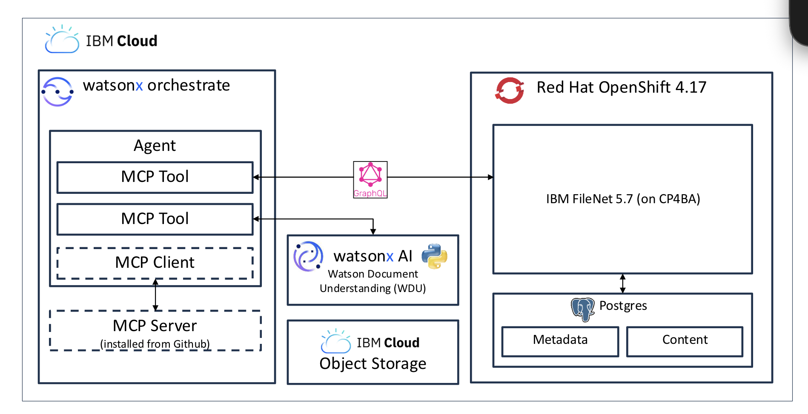

Nationwide watsonx.governance Pilot. Translating policy into deterministic workflow logic with enforced evidence capture and controlled lifecycle progression.
AI adoption in financial services is accelerating. Governance cannot operate as a retrospective control function. It must exist as enforced infrastructure embedded directly into the AI lifecycle.
I worked on a governance focused AI pilot for Nationwide using watsonx.governance. The objective was clear. Replace manual interpretation driven risk processes with deterministic system enforced workflow logic.
How do you translate policy risk frameworks and regulatory obligations into executable logic that constrains behaviour?
Financial institutions operate within layered governance frameworks covering model risk data protection operational risk regulatory oversight and internal controls. These frameworks typically exist as documentation artifacts. Documentation does not enforce behaviour.
The core challenge was not writing code. The challenge was modelling policy intent with precision.
Governance requirements were translated into:
Governance constraints were encoded directly into workflow progression rules. Human interpretation was no longer the primary enforcement mechanism.
Every AI initiative was assessed through structured inputs including:
These attributes generated dynamic risk tiers which directly controlled downstream workflow behaviour.
Workflow progression was governed by conditional logic gates. Advancement required evidence submission and control satisfaction.
Governance credibility depends on traceability. Controls ensured evidence capture occurred at deterministic lifecycle boundaries.
The workflow became the enforcement mechanism.
The pilot was implemented as a governed workflow layer orchestrating document processing evidence capture and lifecycle progression. Orchestration and enforcement lived in watsonx Orchestrate. Enterprise content services operated on OpenShift.
MCP tools provided controlled interfaces to downstream services. Watson Document Understanding converted unstructured content into structured metadata aligned to governance schemas. FileNet persisted enterprise records. Postgres supported metadata storage. Object Storage handled durable artefacts.

Orchestration enforced governance logic. MCP tools abstracted platform services. WDU extracted structured metadata. FileNet and Postgres maintained enterprise persistence and audit traceability.
Governance was engineered as infrastructure rather than treated as documentation.
AI governance is a systems engineering discipline. It requires formalising ambiguity translating policy into deterministic logic designing constrained progression pathways and balancing enforcement with adaptability.
Organisations that scale responsibly will embed governance directly into execution layers rather than applying it after deployment.